Et godnatteventyr i ti kapitler
De fire prinsessene og Flamme
Om Hanna, Ellie, Astrid og Ela – og en liten, svart drage med skjell som stjernehimmel.
🌟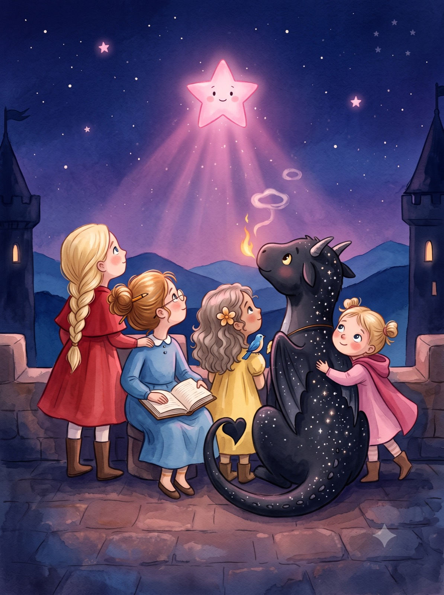
Et godnatteventyr i ti kapitler
Om Hanna, Ellie, Astrid og Ela – og en liten, svart drage med skjell som stjernehimmel.
🌟
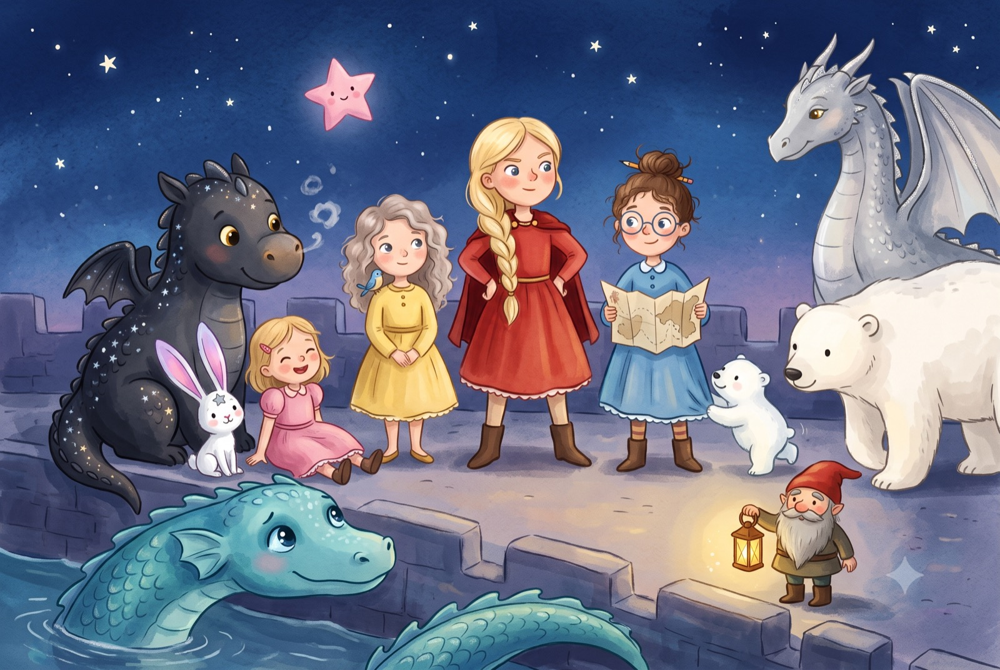
Hanna (den modige) er den eldste. Hun har langt, lyst blondt hår i en tykk flette over skulderen og går alltid i rød kjole med en kort kappe. Med sitt uredde blikk er hun ofte den som går først.
Astrid (den kloke) er nest eldst. Hun har lysebrunt hår med et gyllent skjær, satt opp i en rotete knute med en blyant bak øret, og bruker runde små briller. Hun går i blå kjole og har alltid en skulderveske full av bøker og kart.
Ellie (dyrenes venn) er nest minst. Hun har lyst askebrunt, krøllete hår med en liten blomst bak øret. I den gule kjolen sin utstråler hun ro, og hun har nesten alltid en liten blåfugl som fast følgesvenn på skulderen.
Ela (den kløktigste) er den yngste og minste. Hun har lysebrunt hår i to små musefletter, store nysgjerrige øyne og et lurt smil. Hun går i en rosa kjole med kappe, og legger merke til alle de små detaljene de andre overser.
Flamme er prinsessenes beste venn! Han er en drage på størrelse med en liten ponni. Han har en rund og koselig kropp, med mattsvarte skjell som glitrer som stjerner i mørket, og store gylne, vennlige øyne. Han spyr aldri stor ild – bare en liten, varm glød og de koselige små røykringene som han blåser når han er fornøyd.
Gjennom fortellingen vil du også møte den enorme og snille sjøormen Bølge, den magiske hvite kaninen Nulle med skiftende farger på ørene, den gamle og kloke Fjellnissen med lykten sin, den vimsete isbjørnungen Frost, og den majestetiske, gamle nattedragen Bestemor Embra.
Kapittel 1 · 🌟
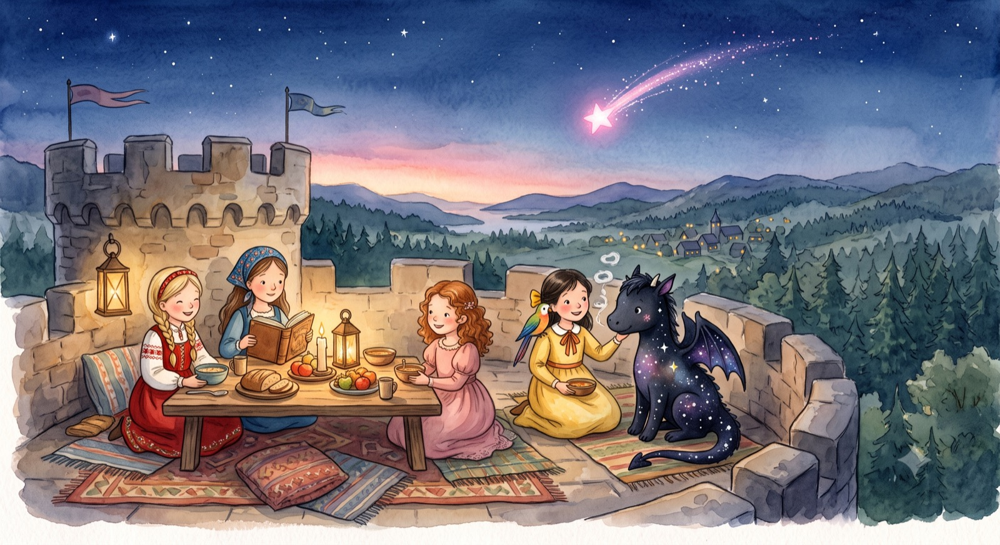
Langt, langt borte, bak sju blå fjell og sju glitrende innsjøer, lå det et slott med tårn så høye at skyene måtte svinge unna. I slottet bodde fire prinsesser: Hanna, Ellie, Astrid og Ela.
Hanna var den eldste og den modigste – hun gikk alltid først og var nesten aldri redd. Astrid var den kloke, som leste bøker og kart og husket alt hun noen gang hadde lært. Ellie kunne snakke med fugler og dyr og visste alltid hvor vinden kom fra. Og Ela, den yngste og minste, var den kløktigste av dem alle – hun så det ingen andre så, og fikk de lureste ideene.
Men det aller beste med slottet var ikke tårnene eller den gylne trappen. Det var bestevennen deres: en liten, svart drage som het Flamme. Flamme var ikke mye større enn en ponni, men skjellene hans skinte som stjernehimmelen om natten, og når han lo, kom det små røykringer ut av nesen hans.
En kveld, da de fire prinsessene satt på slottsmuren og spiste kveldsmat sammen med Flamme, så de noe rart på himmelen. En liten stjerne blinket – ikke hvitt som de andre stjernene, men rosa. Og så… falt den! Den suste over himmelen og landet med et mykt dunk langt inne i Hviskeskogen.
«Vi må finne den!» ropte Astrid og rullet ut kartet sitt. «Den landet her – midt i Hviskeskogen!»
«Men Hviskeskogen er mørk om natten,» sa Ela stille.
Hanna tok hånden hennes. «Vi er sammen. Og vet du hva? Å være modig betyr ikke at man aldri er redd. Det betyr at man tør likevel.»
Flamme senket den lange halen sin som en sklie. «Hopp på, prinsesser! Jeg er liten, så jeg må fly to turer – men små drager flyr raskest av alle!»
Først fløy Flamme med Hanna og Astrid, og så suste han tilbake og hentet Ellie og Ela. Han lyste opp veien med små, forsiktige flammer. Ellie plystret til en ugle, og uglen svarte: «Hu-hu! Stjernen falt ved Sølvbekken!»
De samlet seg ved bekken, og der, i en liten krater av mose, lå den – en bitteliten stjerne som skalv og blinket svakt rosa.
«Den er redd,» hvisket Ela, som alltid la merke til slikt, og satte seg på huk. «Hei, lille venn. Vi skal ikke skade deg.»
Stjernen blinket. Og så – kunne dere tro det – begynte den å snakke med en stemme like tynn som sølvtråd: «Jeg falt ned fra himmelen og finner ikke veien hjem. Uten meg blir det et mørkt hull på nattehimmelen, og alle barn som ser opp vil savne meg.»
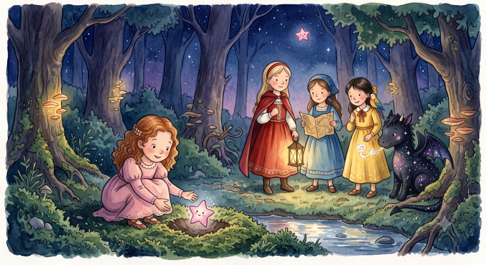
«Hvor høyt kan du fly, Flamme?» spurte Astrid og kikket opp mot himmelen.
Flamme svelget. «Jeg… jeg har aldri fløyet helt til stjernene før. Og jeg er jo bare en liten drage. Tenk om jeg ikke klarer det?»
Da la Hanna hånden sin på den lille dragenesen. «Husker du hva vi alltid sier? Man klarer mer sammen enn alene.»
«Og vi blir med deg hele veien,» sa Ellie.
Ela løftet forsiktig den lille stjernen og holdt den varmt inntil kappen sin. Så klatret alle fire opp på Flammes rygg – det gikk akkurat, hvis de satt tett i tett og holdt godt rundt hverandre. Og med et brøl av mot slo Flamme ut de svarte vingene sine.
Opp, opp, opp fløy de! Forbi skyene som smakte som sukkerspinn. Forbi månen, som vinket med det ene månehornet sitt. Vinden ulte, og det ble kaldt, og Flammes små vinger måtte jobbe hardt. Men prinsessene holdt rundt hverandre og sang en sang for å varme både seg selv og Flamme:
«Sammen er vi sterke, sammen tør vi alt,
sammen flyr vi høyere enn noen har fortalt!»
Og Flamme, som hørte sangen, kjente at vingene ble sterkere for hvert vingeslag.
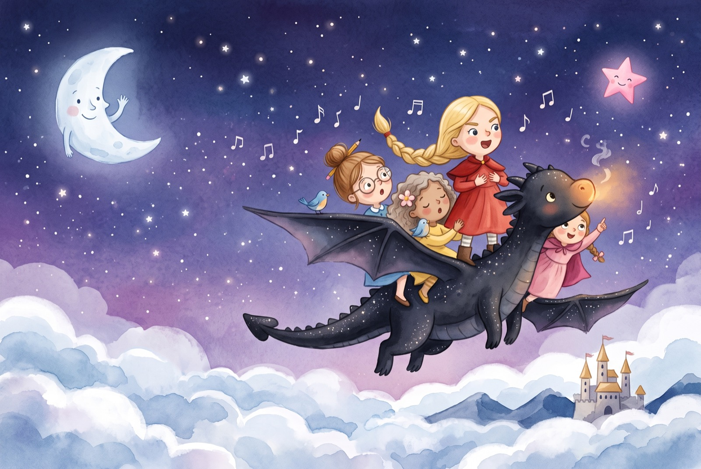
Til slutt kom de helt opp til nattehimmelen, der tusenvis av stjerner glitret rundt dem som en diamanthage. Den lille rosa stjernen hoppet ut av Elas hender og svevde opp på plassen sin.
«Takk, prinsesser! Takk, modige drage!» ropte den. «Fra nå av skal jeg blinke ekstra rosa hver kveld – bare for dere!»
Og alle stjernene rundt begynte å blinke og glitre, som om hele himmelen klappet.
Da de landet på slottsmuren igjen, var det nesten morgen. De fire prinsessene ga Flamme en diger klem – Hanna på halen, Ellie på vingen, Astrid på ryggen og Ela helt rundt den lille nesen hans.
«Vet dere hva jeg lærte i dag?» sa Flamme og blåste en fornøyd røykring. «At man kan klare ting man aldri trodde man kunne – hvis man har venner som tror på en. Selv om man er verdens minste drage!»
«Og at små kan hjelpe store,» sa Ela og smilte. «Selv en bitteliten stjerne. Og selv den minste prinsessen.»
Så gikk de til sengs, alle fem – for Flamme fikk selvfølgelig sove i slottsgården på sin store pute av høy. Og hvis du ser nøye etter på himmelen i kveld, kanskje du ser en liten stjerne som blinker rosa?
Da vet du at den hilser fra Hanna, Ellie, Astrid, Ela – og bestevennen deres, dragen Flamme.
Snipp snapp snute, så var eventyret ute! ✨🐉👑
Kapittel 2 · 💎
I slottet langt, langt borte bodde fortsatt de fire prinsessene Hanna, Ellie, Astrid og Ela. Og bestevennen deres var selvfølgelig Flamme – en liten, svart drage med skjell som skinte som stjernehimmel om natten. Flamme var ikke stor som andre drager. Faktisk var han ikke mye større enn en ponni. Men det han manglet i størrelse, hadde han i hjertet.
En regnværsdag lekte prinsessene gjemsel i slottets store bibliotek. Ela, som var minst og kunne gjemme seg på de lureste stedene, krøp inn bak den aller største bokhyllen. Og der – bak en støvete bok om troll – fant hun noe rart.
«Kom og se!» ropte hun.
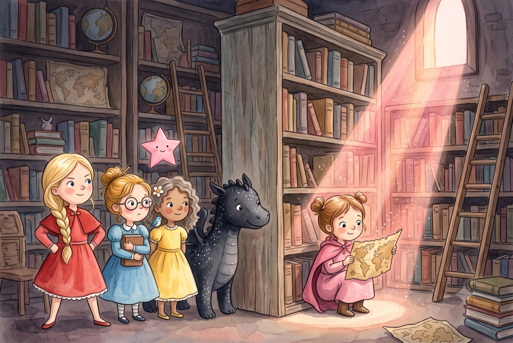
Det var et gammelt, gulnet kart. Og på kartet sto det skrevet med snirklete bokstaver:
«I fjellet bak fossen, der ingen har gått,
ligger en grotte med noe forlatt og forlatt.
Men bare den som er liten og snill,
finner veien inn – hvis den vil.»
Astrid, som elsket kart og gamle bøker mer enn noe annet, fikk store øyne. «Fossen! Det må være Tordenfossen! Jeg har lest om den – den er ikke langt herfra!»
Da regnet stoppet, fløy de av gårde på Flammes rygg – to og to, for Flamme var jo ikke så stor, så han måtte fly to turer. Det syntes han ikke gjorde noe. «Små drager flyr raskere!» sa han stolt, og det var faktisk sant.
Tordenfossen buldret og bruste, og vannet sprutet som tusen små diamanter. Bak fossen kunne de skimte en mørk åpning i fjellet.
«Grotten!» ropte Hanna og gikk modig først, helt bort til fjellveggen. «Men se – inngangen er bitteliten!»
Og det var den. Åpningen var så trang at ingen stor drage i hele verden kunne kommet seg inn. Men Flamme? Flamme var akkurat passe.
«Nå skjønner jeg hva kartet mente,» sa Astrid. «Bare den som er liten og snill. Det er deg, Flamme!»
Flamme ble helt varm inni seg. Han hadde noen ganger vært lei seg for at han var mindre enn andre drager. Men i dag var det å være liten det aller beste man kunne være.
Flamme krøp først inn og lyste opp veien med en liten, forsiktig flamme. Prinsessene fulgte etter, hånd i hånd, med Hanna fremst. Inne i fjellet åpnet grotten seg til en stor sal – og der glitret det i tusen farger! Veggene var dekket av lysende krystaller, blå og rosa og gylne.
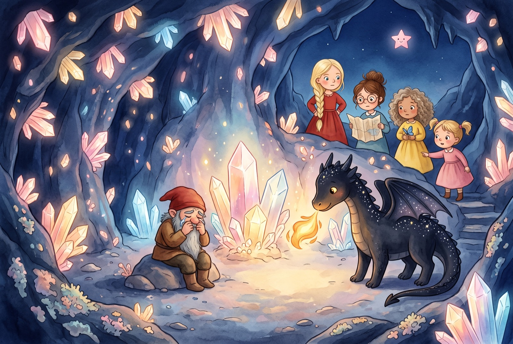
Men midt i salen satt noen og gråt.
Det var en gammel fjellnisse med langt, grått skjegg. «Å, endelig!» snufset han. «Jeg har vært innelåst her i hundre år! Jeg gjemte meg her med skatten min, men så raste steiner ned foran den store inngangen, og jeg er for gammel til å grave meg ut.»
«Skatten din?» spurte Ellie forsiktig.
Nissen pekte på en liten trekiste. Prinsessene ventet gull og juveler – men da nissen åpnet den, lå det bare en gammel, tørket blomst der. «Den fikk jeg av min beste venn for lenge, lenge siden,» sa nissen. «Det er den fineste skatten jeg har. Venner er mer verdt enn gull, vet dere.»
Prinsessene så på hverandre og smilte. Det visste de så godt.
«Men hvordan får vi nissen ut?» spurte Hanna. «Han er for stor for den lille åpningen bak fossen.»
Alle tenkte og tenkte. Og så var det Ela, den minste, som fikk den lure ideen. «Vent litt! Astrid – har du ikke lest at stein som blir varm og så plutselig kald, kan sprekke?»
«Jo!» ropte Astrid. «Det står i den store boken om fjell!»
«Da vet jeg det,» sa Ela lurt. «Flamme varmer steinene foran den store inngangen – og så heller vi kaldt vann fra fossen på dem!»
Flamme pustet forsiktig, jevn og fin varme på de store steinene – ikke for mye, ikke for lite, akkurat slik bare en liten drage med god kontroll kunne. Så hentet prinsessene kaldt vann fra fossen og helte på. KRAKK! Steinene sprakk i biter, og prinsessene ryddet dem vekk, én etter én, alle sammen.
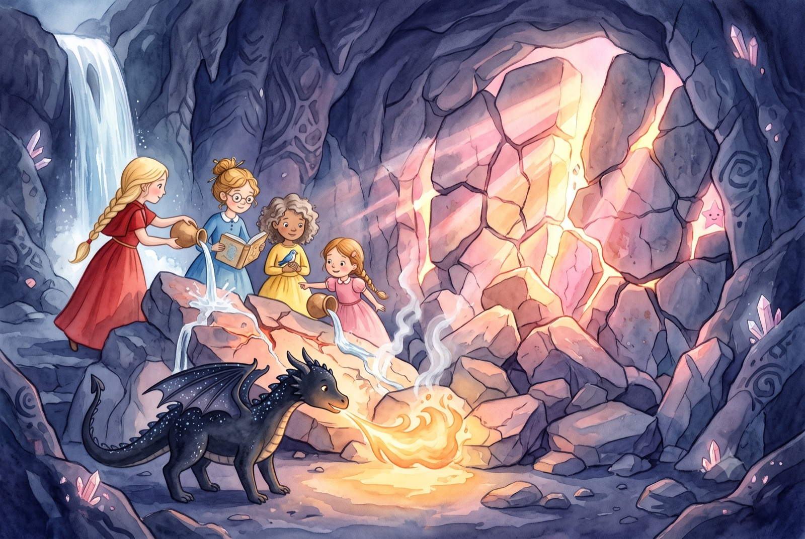
Sollyset strømmet inn i grotten, og fjellnissen gikk ut i det fri for første gang på hundre år. Han strakte armene mot himmelen og lo så skjegget ristet.
«Takk, små venner! Som takk skal dere få hver deres krystall fra grotten min – og du, lille svarte drage, du skal få vite en hemmelighet.» Nissen hvisket i Flammes øre: «De største heltene er sjelden de største. De er de som bryr seg mest.»
Den kvelden satt de fem vennene på slottsmuren med hver sin glitrende krystall og så på solnedgangen. Flammes svarte skjell fanget det siste lyset og skinte som tusen små stjerner.
«Vet dere hva?» sa Flamme fornøyd. «Jeg vil aldri mer ønske at jeg var en stor drage.»
«Bra,» sa Ela og la kinnet mot den myke dragenesen hans. «For vi vil ha deg akkurat som du er.»
Og oppe på himmelen blinket den lille rosa stjernen ekstra hardt, som om den var helt enig.
Snipp snapp snute, så var også dette eventyret ute! ✨🐉👑
Kapittel 3 · 🌊
Det var sommer i kongeriket, og de fire prinsessene Hanna, Ellie, Astrid og Ela hadde reist til stranden nedenfor slottet sammen med bestevennen sin – den lille, svarte dragen Flamme. De bygget sandslott (med ekte tårn, selvfølgelig, for de var jo eksperter på slott), og Flamme brukte den varme pusten sin til å tørke håret deres etter badingen.
Men da solen begynte å gå ned, hørte de noe merkelig.
En sang. En vakker, sørgelig sang som kom rullende inn fra havet sammen med bølgene.
Åååå-hooo… åååå-hooo…
«Hører dere?» hvisket Ellie. Hun lukket øynene og lyttet, slik hun gjorde når dyrene snakket til henne. «Det er noen der ute. Og de er… ensomme.»
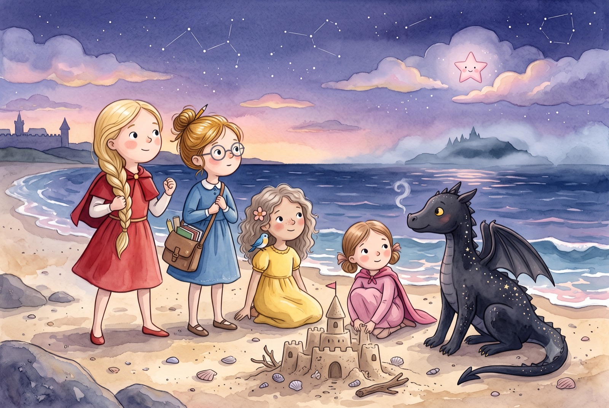
Langt der ute, der havet møtte himmelen, lå det en liten øy dekket av tåke. Ingen fra kongeriket hadde noen gang vært der. De voksne sa at man skulle holde seg unna, for i tåken bodde det visst et sjøuhyre.
«Et uhyre som synger så trist?» sa Ela og rynket pannen. «Jeg tror ikke uhyrer synger sånn. Jeg tror det er noen som trenger en venn.»
Hanna reiste seg med det samme, slik hun alltid gjorde når noen trengte hjelp. Astrid nikket. Ellie nikket. Og Flamme rettet ut de små, svarte vingene sine.
«To og to, som vanlig,» sa han. «Hold godt fast – vi flyr mot tåken!»
Tåken var tykk som grøt, og Flamme måtte fly sakte, sakte. Hanna, som satt fremst på den første turen, kikket modig fremover uten å blunke, og Ellie plystret til en måke som viste dem veien. Til slutt var alle samlet på en liten strand med svart sand.
Og der, halvveis oppe av vannet, lå det noe stort.
Det var en sjøorm! Lang som ti båter, med skimrende blågrønne skjell og store, våte øyne. Da den så dem, ble den så redd at den prøvde å gjemme seg bak en stein – som var altfor liten.
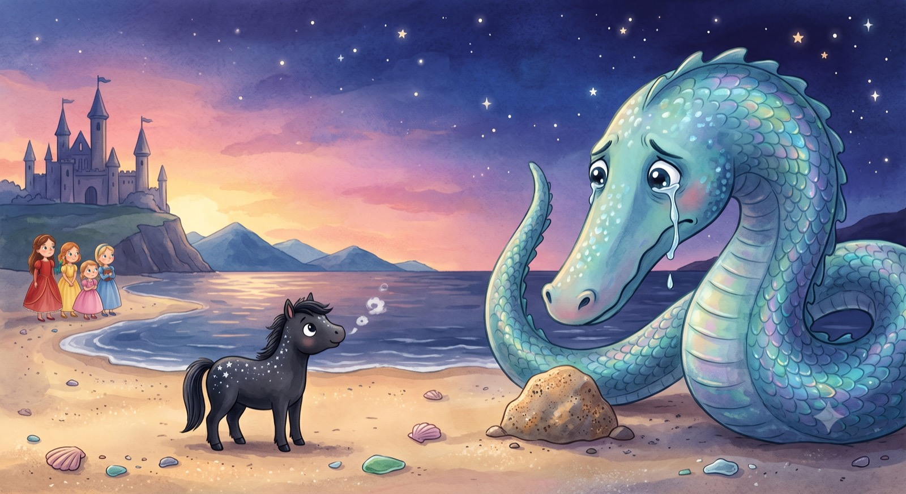
«Ikke vær redd!» ropte Ela. «Vi kommer ikke for å skade deg!»
Sjøormen tittet forsiktig frem. «Skal… skal dere ikke skrike og løpe vekk? Det er det alle gjør.»
«Hvorfor skulle vi det?» spurte Hanna og gikk rolig nærmere, helt uten frykt.
«Fordi jeg er så stor og stygg,» sa sjøormen, og en diger tåre trillet nedover snuten. «Alle tror jeg er et uhyre. Så jeg gjemmer meg her i tåken, helt alene. Jeg synger hver kveld i håp om at noen skal høre at jeg egentlig er snill.»
Flamme trippet bort til den enorme sjøormen. Ved siden av den så den lille, svarte dragen ut som en marihøne ved siden av en hest.
«Vet du,» sa Flamme, «jeg trodde en gang at jeg var feil fordi jeg var for liten. Og du tror du er feil fordi du er for stor. Men vennene mine lærte meg noe: det er ikke størrelsen som teller. Det er hjertet.»
Sjøormen blunket. «Mener du… at vi kan være venner?»
«Vi ER venner,» sa Hanna bestemt. «Fra og med nå. Hva heter du?»
«Bølge,» sa sjøormen, og for første gang på veldig, veldig lenge – smilte den.
Og vet dere hva som skjedde da? Da Bølge smilte og lo sammen med sine nye venner, begynte tåken rundt øya å lette! For tåken var laget av all ensomheten og alle de triste tankene – og nå trengtes den ikke lenger.
Solen brøt gjennom, og øya viste seg å være det vakreste stedet, med palmer og skjell og perlemorsand.
Prinsessene lekte med Bølge helt til månen sto opp. Bølge lagde kjempebølger de kunne ake på, og Flamme fløy loop-de-loop over hodet på dem. Og da det ble sent, fulgte Bølge dem hele veien hjem over havet, med prinsessene og Flamme trygt på ryggen, mens de sang en ny sang sammen – en glad en denne gangen:
«En venn er en venn, om stor eller små,
det er hjertet som teller, det kan alle forstå!»
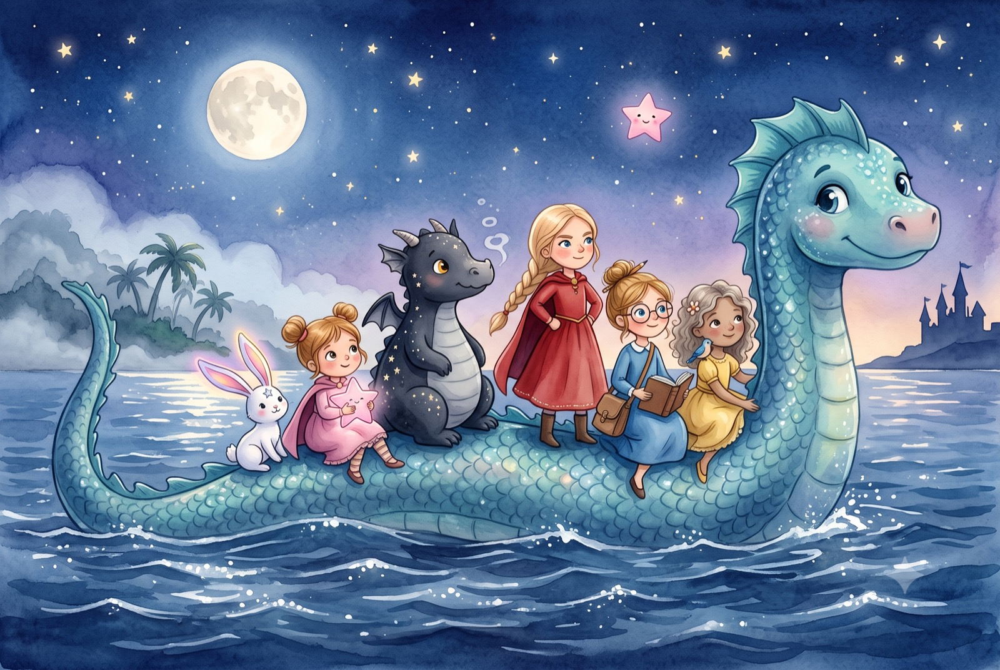
Den kvelden satt de på slottsmuren som alltid og vinket til Bølge, som svømte i månelyset nede i bukten. Han skulle komme tilbake hver eneste dag og leke.
«Tenk,» sa Ela søvnig, «alle trodde det bodde et skummelt uhyre der ute. Men det bodde bare en som ventet på en venn.»
«Kanskje,» sa Astrid klokt, «er det sånn med mange som virker skumle. Kanskje de bare er ensomme.»
Og oppe på himmelen blinket den lille rosa stjernen – og hvis du så veldig, veldig nøye etter, kunne du se at den blinket i takt med Bølges glade sang fra havet.
Snipp snapp snute, så var også dette eventyret ute! ✨🐉🌊
Kapittel 4 · 🐰
Det var vår i kongeriket, og slottshagen skulle egentlig være full av blomster. Men i år var noe galt. Blomstene ville ikke våkne. Knoppene satt tett igjen, gresset var grått, og selv de gamle epletrærne sto og hang med grenene.
«Så rart,» sa Astrid og studerte hagen slik hun pleide å studere kartene og bøkene sine. «Våren er jo her. Hvorfor kommer ikke blomstene?»
Da hørte Ellie noe. En liten, liten snufselyd fra buskene borte ved slottsmuren. Hun listet seg bort, kikket inn under en busk – og der satt den.
En kanin.
Men ikke en vanlig kanin. Denne kaninen var hvit som nysnø, med lange ører som skiftet farge – rosa, lilla, gyllen – og på pannen hadde den en liten stjerne av sølv. Og den gråt.
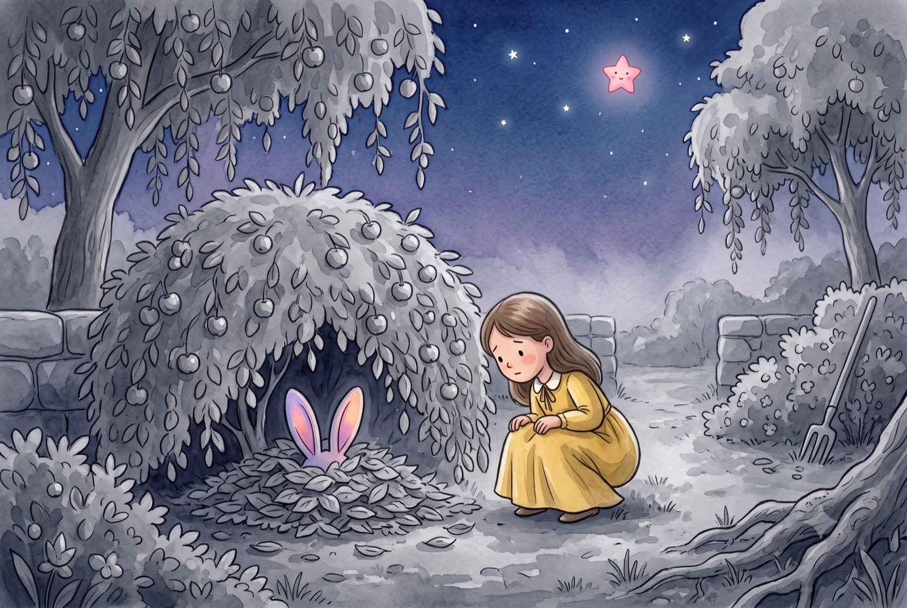
«Hei, lille venn,» sa Ellie mykt, for hun kunne jo snakke med dyr. «Hvorfor gråter du?»
Kaninen hikstet. «Jeg heter Nulle, og jeg er en vårkanin. Det er jeg som skal vekke blomstene! Hver gang jeg hopper, skal det vokse blomster der jeg lander. Men…» Den snufset igjen. «Magien min er blitt borte! Jeg hopper og hopper, og det kommer ikke en eneste blomst. Uten meg blir det aldri vår, og alt er min feil!»
De fire prinsessene og Flamme satte seg i ring rundt den lille kaninen.
«Fortell,» sa Ela vennlig. «Når sluttet magien å virke?»
Nulle tenkte seg om. «Det var etter at jeg hoppet feil foran alle de andre vårkaninene. Jeg landet i en sølepytt, og alle lo av meg. Siden da har jeg vært så redd for å hoppe feil igjen at…» Den ble stille.
«…at du nesten ikke tør å hoppe i det hele tatt?» spurte Astrid stille, for hun var klok og skjønte slikt.
Nulle nikket med hele seg, så de lange ørene dinglet.
Da satte Hanna seg helt inntil kaninen. «Skal jeg fortelle deg en hemmelighet? Alle sier at jeg er den modigste i hele slottet. Men vet du hva? En gang falt jeg ned fra det laveste eplet i hele treet, rett foran hele slottet. Alle så det.»
«Hva gjorde du da?» hvisket Nulle.
«Jeg gråt litt. Og så klatret jeg opp igjen. For vet du hva som er rart med å hoppe feil og falle ned? Det er ikke så farlig som man tror. Det farligste er å slutte å prøve. Det er det som er å være modig – ikke å aldri falle.»
«Og vi lo aldri av deg, Hanna,» sa Ellie. «Ekte venner ler ikke av hverandre. De hjelper hverandre opp.»
«Kom,» sa Ela og fikk en av sine lure ideer. «Vi hopper sammen med deg, Nulle! Hvis alle hopper, er det ingen som hopper feil!»
Og så, midt i den grå slottshagen, begynte de å hoppe. Hanna hoppet. Ellie hoppet. Astrid hoppet så bøkene i lommene hoppet med, og Ela hoppet i små, glade byks. Til og med Flamme hoppet – og en liten svart drage som hopper er noe av det morsomste som finnes, så snart lo alle sammen. Ikke av hverandre. Men med hverandre.
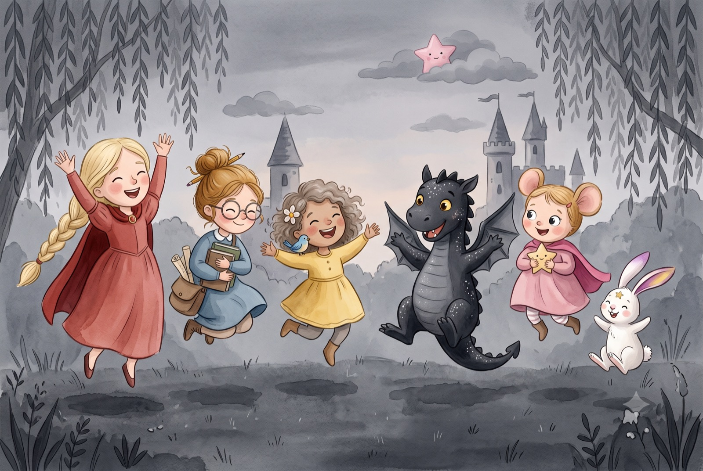
Og Nulle? Nulle glemte helt å være redd. Den lille vårkaninen tok sats, ørene lyste i alle regnbuens farger, og – HOPP!
Der den landet, sprang det opp hundre blomster på en gang! Røde tulipaner, gule påskeliljer, blå klokkeblomster!
«MAGIEN!» ropte Nulle. «Den er tilbake!»
«Den var aldri borte,» smilte Ela. «Den gjemte seg bare bak redselen din.»
Nå var ikke Nulle til å stoppe. Kaninen hoppet gjennom hele slottshagen, over engene, langs veiene og gjennom landsbyen, og overalt der den landet, eksploderte det i blomster. Flamme fløy over med prinsessene på ryggen – to og to, som vanlig – og fra luften kunne de se hvordan hele kongeriket ble farget grønt og rosa og gult, som om noen malte med en gigantisk pensel.
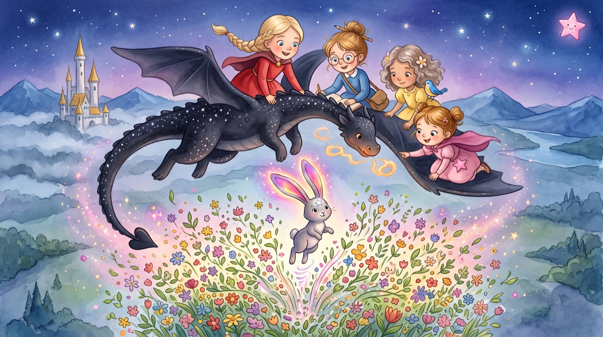
Nede i bukten stakk Bølge hodet opp av vannet og sang en glad vårsang, og fuglene som Ellie kjente stemte i.
Da kvelden kom, var hele kongeriket i blomst. Nulle satt på slottsmuren sammen med de fem vennene, trøtt og lykkelig, med en blomsterkrans rundt de lange ørene som Ela hadde laget.
«Neste vår,» sa Nulle, «kommer jeg tilbake. Og hvis jeg noen gang blir redd for å hoppe feil igjen…»
«…så hopper vi sammen med deg,» sa alle i kor.
Og oppe på himmelen blinket den lille rosa stjernen fornøyd, for den hadde sett alt sammen – og stjerner elsker blomster nesten like mye som de elsker modige små kaniner.
Snipp snapp snute, så var også dette eventyret ute! ✨🐰🌷
Kapittel 5 · 💫
Det var midt på natten, og hele slottet sov. Alle utenom Ela.
Ela lå i sengen sin og stirret på noe merkelig. På nattbordet hennes, ved siden av vannglasset, lå krystallen hun hadde fått av fjellnissen. Og krystallen lyste. Et mykt, rosa lys, akkurat samme farge som stjernen på himmelen.
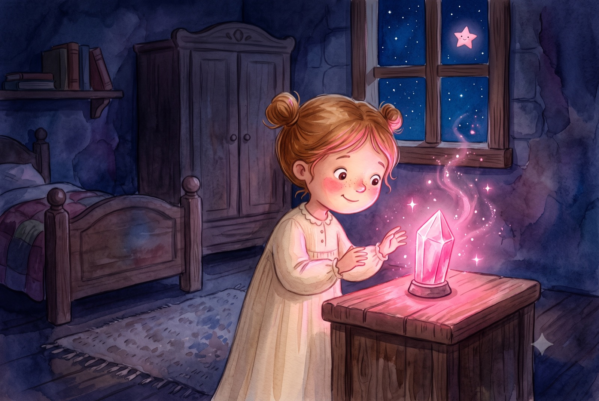
Ela listet seg ut av sengen og bort til søstrenes rom. «Våkne!» hvisket hun. «Krystallen min lyser!»
Snart sto alle fire prinsessene i nattkjoler rundt nattbordet. Og da de hentet sine egne krystaller, så de noe enda rarere: Hannas krystall glødet svakt blått, og Ellies skimret gyllent. Bare Astrids krystall lå der mørk og stille.
«Tre av fire lyser,» sa Astrid og myste, slik hun gjorde når hun tenkte hardt. «Det må bety noe. Og jeg vet hvor vi finner svar: i biblioteket!»
Astrid klatret opp den høye stigen i biblioteket, helt til øverste hylle, der de eldste bøkene sto. Og der, bak en tykk bok om drager, fant hun den: en liten, støvete bok med stjerner på omslaget. «Om Stjernelandet og de fire lys» sto det med gullbokstaver.
Hun leste høyt:
«Fire krystaller fra fjellets sal,
våkner av godhet, i dal etter dal.
Ett lys for hvert hjerte som hjelpes på vei –
når alle fire skinner som stjerner, åpner porten seg.»
«Porten?» sa Hanna. «Hvilken port?»
«Det står ikke mer,» sa Astrid og bladde. «Sidene bakerst er… borte. Revet ut for lenge siden.»
Da fikk Ela, den minste og kløktigste, en tanke. «Vent litt. Hvem ga oss krystallene? Fjellnissen! Han bodde i grotten i hundre år – hvis noen vet hemmeligheten, er det ham!»
Neste morgen fløy Flamme dem til Tordenfossen, to og to som vanlig. Fjellnissen hadde laget seg et koselig lite hus rett ved grotten sin, med røyk fra pipen og blomster i vinduskarmen – Nulle hadde selvfølgelig vært innom og hoppet litt i hagen hans.
Da nissen så krystallene deres, ble han først helt stille. Så begynte øynene hans å glitre.
«Så det er sant,» hvisket han. «Dere er de rette.»
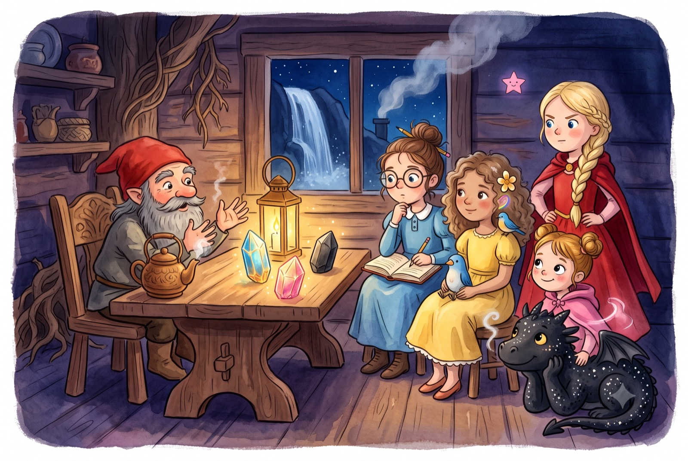
Han satte på tekjelen, og mens dampen steg, fortalte han:
«Krystallene i grotten min er ikke vanlige krystaller. De er stjernefrø – de falt ned fra Stjernelandet for tusen år siden. Stjernelandet er landet bak nattehimmelen, der alle stjernene bor. Og stjernefrøene har én magi: de våkner av godhet. Hver gang eieren hjelper noen med et ekte, godt hjerte, tennes et lys.»
«Så det er derfor!» ropte Ellie. «Ett lys for deg, nisse! Ett for Bølge! Ett for Nulle!»
«Nettopp,» nikket nissen. «Tre gode gjerninger, tre lys. Og når alle fire skinner sterkt som ekte stjerner…» Han senket stemmen. «…da åpner porten til Stjernelandet seg. Ingen fra vår verden har vært der på tusen år.»
Prinsessene så på Astrids krystall, som fortsatt lå mørk i hånden hennes.
«Men hvordan tenner vi den siste?» spurte Hanna, som helst ville sette i gang med en gang.
Nissen smilte lurt i skjegget. «Det er det fine, ser dere. Man kan ikke lete etter gode gjerninger, slik man leter etter skatter. Man kan bare holde hjertet åpent – så kommer de til en, når noen trenger det som mest.»
«Så vi skal bare… vente?» sa Hanna utålmodig.
«Ikke vente,» sa Ela og smilte sitt lure smil. «Bare leve som vi alltid gjør. Og være klare.»
Den kvelden satt de fem vennene på slottsmuren med krystallene på rekke foran seg. Tre av dem glødet mykt i mørket – rosa, blå og gyllen. Den fjerde ventet.
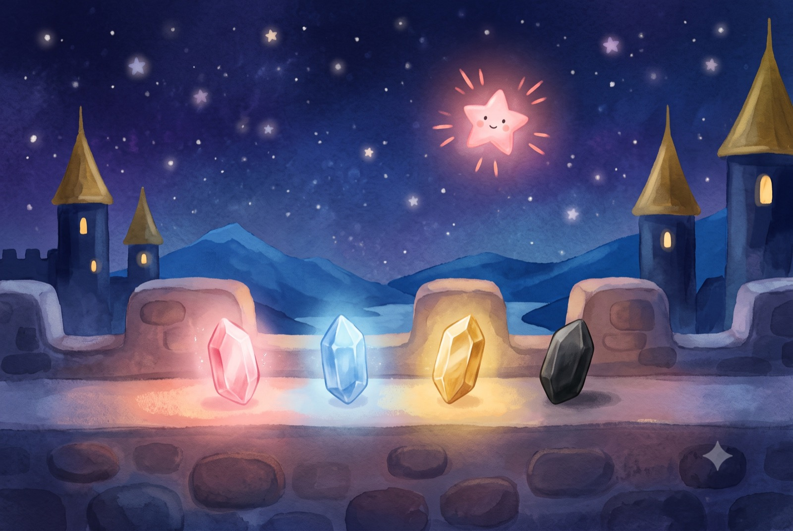
«Stjernelandet,» sa Flamme drømmende og blåste en røykring mot himmelen. «Tenk at det finnes et helt land der oppe. Kanskje vi får se hvor den rosa stjernen bor!»
«Det jeg lurer på,» sa Astrid tankefullt, «er hvorfor stjernefrøene falt ned til oss. Boken sa at porten har vært stengt i tusen år. Hva om…» Hun stoppet. «Hva om noen der oppe kommer til å trenge hjelp?»
Ingen svarte. Men oppe på himmelen blinket den lille rosa stjernen – og denne kvelden, hvis man så veldig nøye etter, blinket den kanskje litt raskere enn den pleide. Nesten som om den ville si noe.
Snipp snapp snute, så var også dette eventyret ute! ✨💎👑
Kapittel 6 · ❄️
Det var midt på sommeren, og prinsessene hadde planlagt piknik i slottshagen. Men da de våknet den morgenen, var alt hvitt.
Snø! Snø i juli! Isblomster på vinduene, istapper fra tårnene, og hele Nulles blomsterhav lå begravd under et tykt, hvitt teppe.
«Dette er ikke vanlig vær,» sa Astrid og blåste frostrøyk mot vindusruten. «Jeg har lest alle værbøkene i biblioteket. Snø om sommeren finnes ikke – ikke med mindre det er magi.»
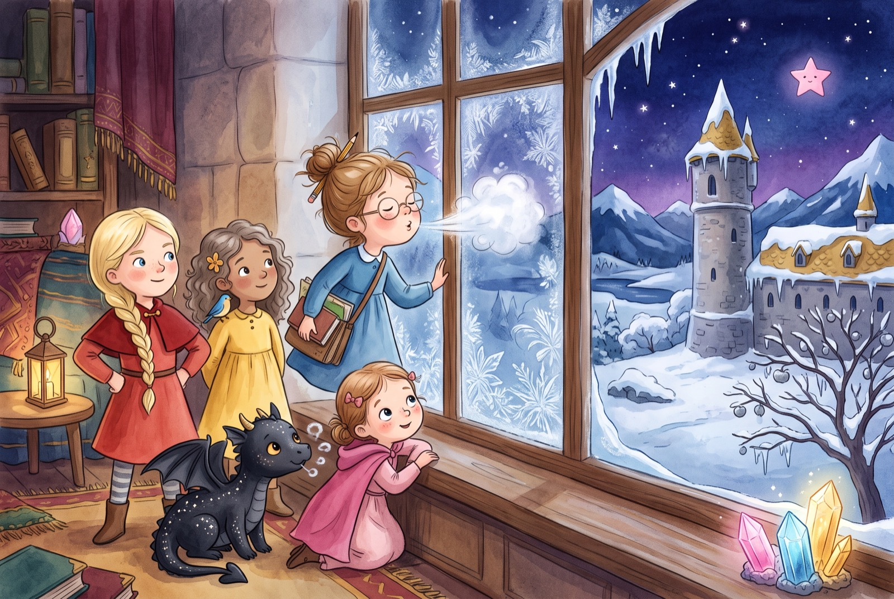
Ute i snøstormen kom Nulle hoppende med ørene fulle av snø. «Blomstene mine! De fryser! Og det blir kaldere og kaldere jo lenger nord man kommer!»
Da lukket Ellie øynene og lyttet, slik bare hun kunne. Gjennom vindens uling hørte hun noe annet. Noe lite.
Noen som gråt.
«Der ute i stormen,» sa hun. «Det er et dyr. Et lite et. Og det er så lei seg at… at jeg nesten fryser inni meg bare av å høre på.»
«Da går vi,» sa Hanna og var allerede på vei mot døren. «Ingen skal sitte alene og gråte i en snøstorm.»
De kledde på seg alt de hadde av ull og votter. Flamme kunne ikke fly i stormen, men han gikk fremst og smeltet en sti gjennom snøen med den varme pusten sin, mens Hanna gikk ved siden av og brøytet vei der vinden var som verst. Nulle hoppet foran og lette etter spor, og Ellie lyttet og lyttet: «Denne veien! Gråten kommer nordfra!»
Jo lenger de gikk, jo kaldere ble det. Og så la Ela merke til noe rart. På bakken lå det små, blanke perler av is, på rekke og rad, som en sti.
«Se,» sa hun. «Det er ikke hagl. Det er tårer. Frosne tårer! Noen har gått her og grått!»
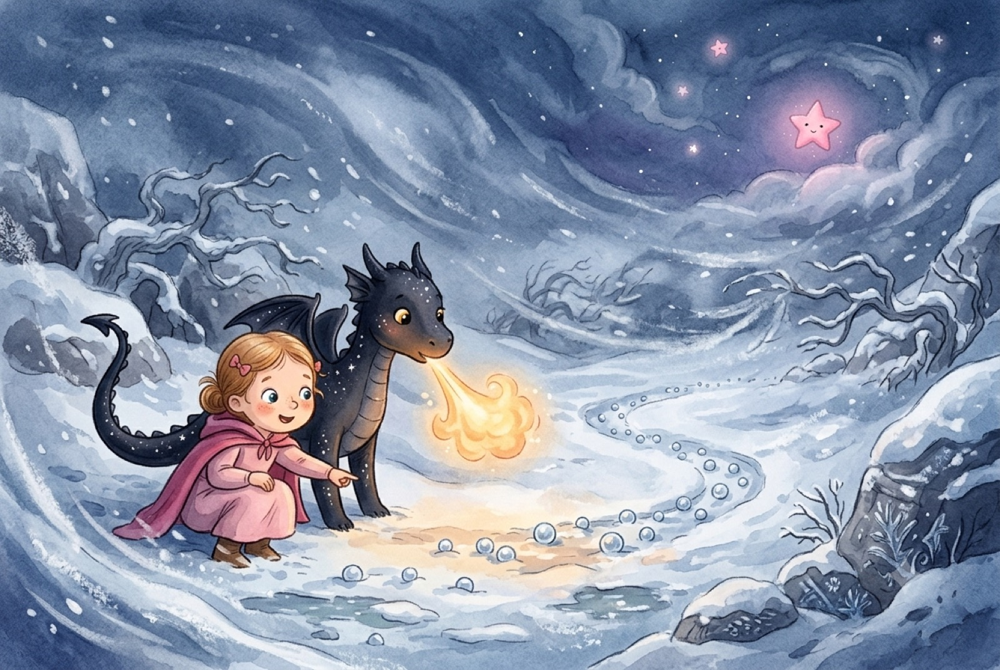
De fulgte tåresporet til en snøfonn ved den store steinen på Nordjordet. Og der, sammenkrøpet i en liten hvit ball som nesten ikke syntes mot snøen, lå en bitteliten isbjørnunge.
«Hei, lille venn,» sa Ellie mykt på bjørnespråket. «Hvem er du?»
Isbjørnungen løftet hodet. «Jeg… jeg heter Frost,» hikstet han. «Jeg kommer fra Isfjellene langt i nord. Jeg lekte gjemsel med mamma, og så gjemte jeg meg SÅ godt at hun ikke fant meg – og da jeg kom frem igjen, var hun borte! Jeg har lett og lett, og nå vet jeg ikke veien hjem, og…» Han begynte å gråte igjen, og for hvert eneste snufs ble luften kaldere, og snøen lavet tettere ned.
«Nå skjønner jeg det,» hvisket Astrid. «Han er en isbjørn fra de magiske Isfjellene – vinterens voktere! Det står om dem i den store boken om nordlyset. Når en av dem er lei seg, blir verden rundt dem til vinter. Det er ikke han som lager stormen med vilje. Det er sorgen hans.»
«Vi må finne mammaen hans,» sa Hanna. «Men hvor? Vi kan ikke lete gjennom hele nord i snøstorm!»
Alle tenkte. Og så smilte Ela plutselig sitt lure smil.
«Jo, det kan vi! Tenk etter: Frost gråt hele veien hit. Og mamma leter jo etter ham – hun gråter sikkert også! Isbjørntårer fryser til isperler…»
«…så vi skal ikke lete etter en isbjørn,» fullførte Astrid og fikk store øyne. «Vi skal lete etter et tårespor! Ela, du er et geni!»
Nulle hoppet høyt av begeistring. «Og ingen finner spor raskere enn en kanin! Kom igjen!»
Flamme varmet Frost forsiktig med pusten sin – akkurat passe varmt, for isbjørner skal jo ikke bli for varme – og med den lille bjørnungen trygt på ryggen la de ut på leting. Nulle hoppet i sikksakk over jordene, og det tok ikke lang tid før den ropte: «HER! Isperler! Store isperler – mammatårer!»
De fulgte det nye tåresporet over to hauger og gjennom en frossen bjørkeskog. Og der, midt på et jorde, sto en stor, hvit isbjørnmamma og ropte fortvilet ut i stormen: «FROST! FROST, HVOR ER DU?»
«MAMMA!»
Frost tumlet ned fra Flammes rygg og sprang på klumsete labber gjennom snøen, og mammaen kom løpende mot ham, og så rullet de rundt i en eneste stor, hvit, lykkelig bamseklem.
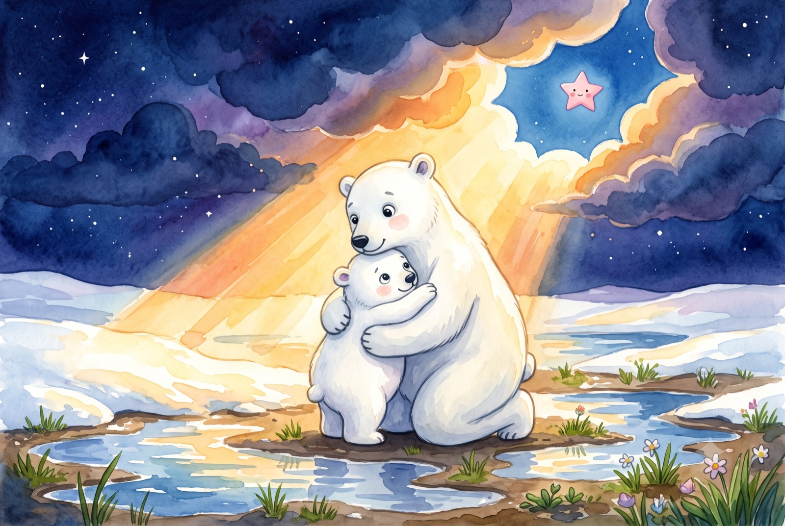
Og da skjedde det. Stormen stilnet. Snøen sluttet å lave ned. Skyene glapp, solen brøt gjennom – og på fem minutter smeltet all snøen bort, og Nulles blomster rettet seg opp igjen, friske som aldri før. For når vinterens voktere er lykkelige, blir det sommer rundt dem igjen.
«Takk,» sa isbjørnmammaen til prinsessene og bukket dypt med det store hodet. «Dere fant min lille gutt da jeg trodde alt var tapt. Isfjellene glemmer aldri en slik tjeneste. Skulle dere noen gang trenge hjelp – ta med varme klær og rop mot nord, så kommer vi.»
Og Frost ga hver eneste av dem en kald, myk bamseklem – og Flamme fikk den største, selv om det freste litt der varm drage møtte kald bjørn.
Den kvelden satt de på slottsmuren som alltid. Solen gikk ned over et kongerike som var grønt og blomstrende igjen.
Og da mørket kom, kjente Astrid at det ble varmt i lommen hennes.
Hun tok frem krystallen sin – og alle holdt pusten. Den mørke krystallen glødet! Bare svakt, som en liten gnist av sølvhvitt lys, men den glødet.
«Fire av fire,» hvisket Hanna.
«Men de skinner ikke sterkt ennå,» sa Astrid og la krystallene på rekke. «Nissen sa: sterkt som ekte stjerner. Det er som om de… lader. Som om de venter på noe.»
«Eller,» sa Ela stille og så opp mot himmelen, der den rosa stjernen blinket, «som om noe venter på oss.»
Snipp snapp snute, så var også dette eventyret ute! ✨🐻❄️❄️
Kapittel 7 · 🐉
Det begynte med et skjell.
Prinsessene og Flamme var på stranden og lekte med Bølge, da Flamme plutselig ble stående helt stille og stirre på noe i sanden. Det var et skjell – men ikke et sneglehus-skjell. Et drageskjell. Svart som natten, med et skimmer av stjerner.
Akkurat som hans egne.
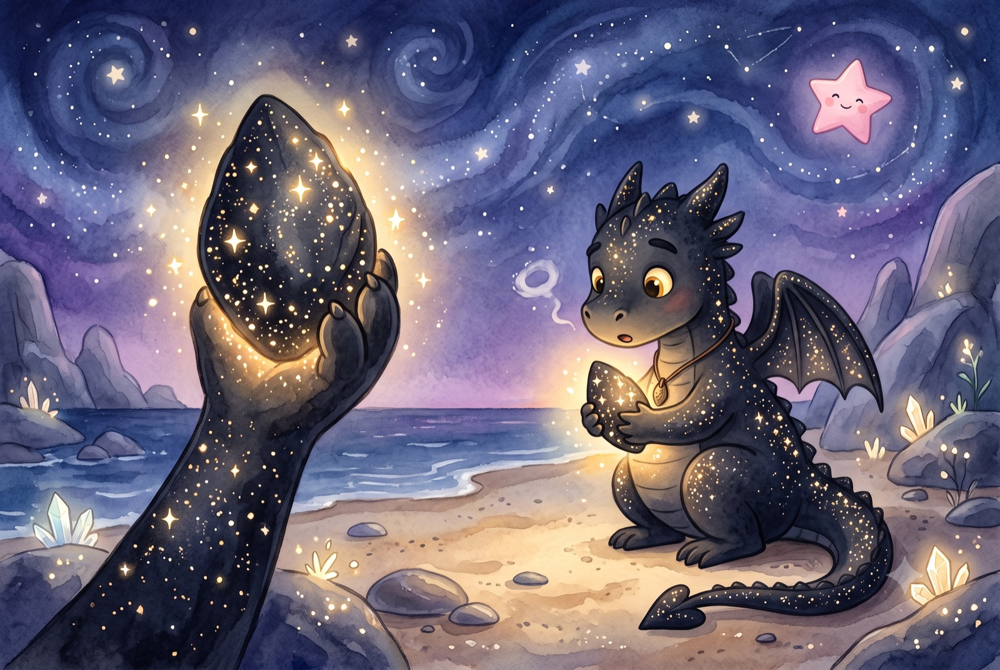
«Men…» Flamme løftet det forsiktig med kloen. «Dette er ikke mitt. Det er mye eldre. Og mye større.» Han så ut over havet med et blikk prinsessene aldri hadde sett hos ham før. «Dere… jeg har aldri møtt en annen svart drage. Jeg kom til slottet som et bittelite drageegg i en kurv, det er alt jeg vet. Hvor kommer jeg egentlig fra?»
Det ble helt stille på stranden. Så la Ela den lille hånden sin på vingen hans.
«Da finner vi det ut. Sammen.»
Bølge løftet det store hodet opp av vannet. «Et svart drageskjell? Jeg vet hvor det kommer fra! Strømmene bærer slike skjell fra Tåkeøyene langt i vest – bortenfor der selv sjøfuglene flyr. Ingen skip tør seile dit. Men jeg kan svømme dit!»
Så la de ut på den lengste reisen de noen gang hadde vært på: alle fire prinsessene og Flamme på Bølges brede rygg, over bølgetopper og gjennom saltsprut, mens solen vandret over himmelen. Ellie snakket med havsulene som viste vei, Astrid fulgte med på stjernene da det ble kveld, og Hanna satt fremst hele veien – for det var jo hennes plass.
Og Flamme? Flamme var uvanlig stille.
«Er du redd?» spurte Ela lavt.
«Litt,» innrømmet Flamme. «Ikke for reisen. Men… tenk om det ikke bor noen der. Eller enda verre: tenk om det gjør det – og de ikke vil ha meg?»
«Da har du fortsatt oss,» sa Ela. «Uansett hva. Det er sånn familie virker.»
Tåkeøyene reiste seg av havet som store, grå skygger. Bølge svømte forsiktig mellom klippene, gjennom en trang fjordarm – og så, plutselig, glapp tåken.
Foran dem åpnet det seg en grønn, skjult dal med fossefall og blomsterenger. Og over dalen, i lange, elegante buer, fløy det drager. Små, svarte drager med skjell som glitret som stjernehimmel.
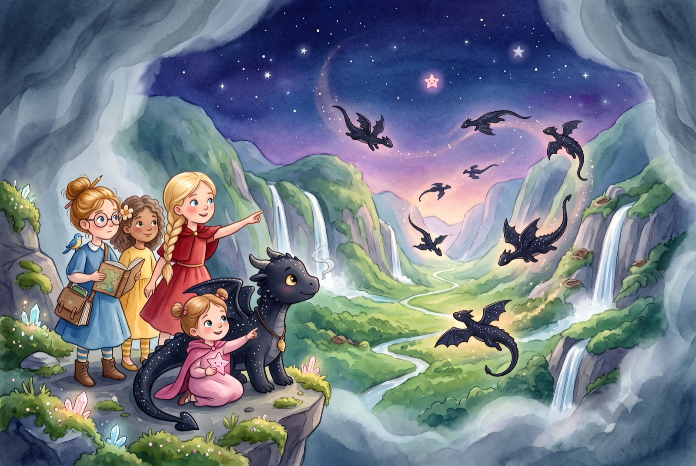
Flamme klarte nesten ikke puste. «De er… de er som meg.»
Dragene fikk øye på dem og kom seilende ned. Fremst fløy en gammel drage med sølvgrå kanter på vingene og kloke, gylne øyne. Hun landet rett foran Flamme, så lenge på ham – og så fyltes de gamle øynene av tårer.
«Stjerneskjell og natteskjær,» hvisket hun. «Det er deg. Du er egget som forsvant i den store stormen for lenge, lenge siden. Vi lette i måneder. Jeg er Embra… moren til din mor. Jeg er bestemoren din, lille venn.»
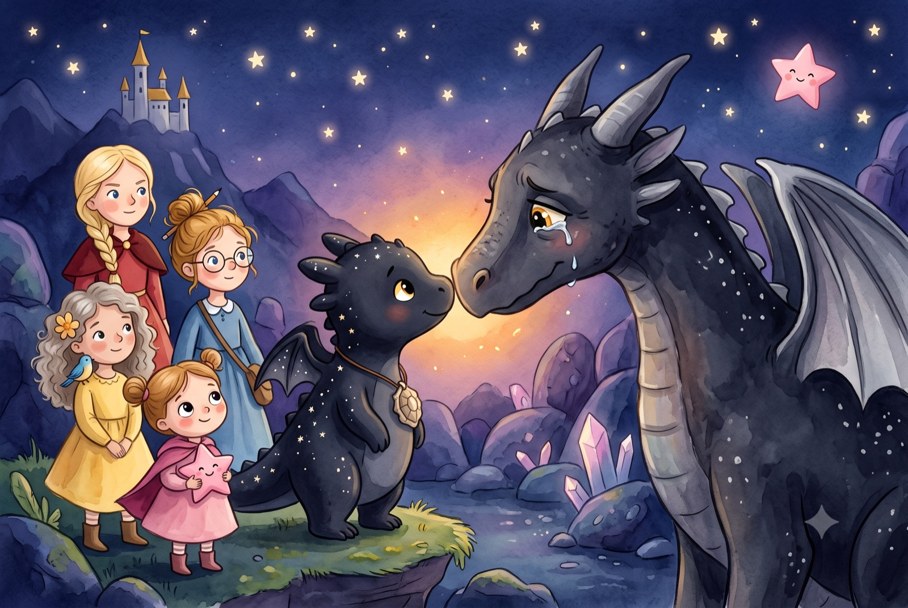
De ble i dalen i tre hele dager. Flamme fikk høre alt: at nattedragene var stjernenes gamle venner, som i tusen år hadde voktet himmelen fra dalen sin. At foreldrene hans hadde vært de modigste flygerne i flokken. At stormen hadde tatt egget hans ut på havet – og at strømmene, ved et under, hadde båret ham helt til slottet der fire små prinsesser fant ham.
Flamme lærte å fly i formasjon med de andre dragene. Han lekte drageleker han aldri hadde kunnet leke før. Og om kveldene lå han inntil bestemor Embra og hørte historier om familien sin.
Den tredje kvelden tok Embra ham til side. «Du vet at du kan bli her, barnebarnet mitt. Dette er flokken din. Dalen din. Hjemmet ditt.»
Flamme så utover dalen. Så så han bort på bålet, der Hanna, Ellie, Astrid og Ela satt – og han så at Ela gråt litt i det stille, selv om hun prøvde å smile, for hun hadde selvfølgelig skjønt hva som kom til å bli spørsmålet.
Og da visste Flamme svaret. Han hadde egentlig visst det hele tiden.
«Bestemor,» sa han, «du lærte meg noe viktig: hjem er ikke der man kommer fra. Hjem er der hjertet bor. Og hjertet mitt bor i et slott langt, langt borte, sammen med fire prinsesser som fant et lite egg og elsket det før de visste hva som var inni. Men –» han la hodet inntil henne, «– nå vet jeg hvor jeg kommer fra. Og jeg kommer på besøk. Ofte. Det lover jeg.»
Embra nikket langsomt, og det gylne blikket ble varmt. «Du valgte med hjertet. Da valgte du riktig.» Så løftet hun hodet og ropte ut over dalen: «Hør, alle sammen! Flamme av vår flokk har funnet familie i menneskenes land. Fra i dag er hans venner våre venner. Og trenger de oss noen gang –» hun bredte ut de store, gamle vingene, «– da flyr hele natteflokken!»
Hele flokken fulgte dem ut fjorden, i én stor, svart, glitrende sky over Bølges rygg, før de vendte om og forsvant i tåken.
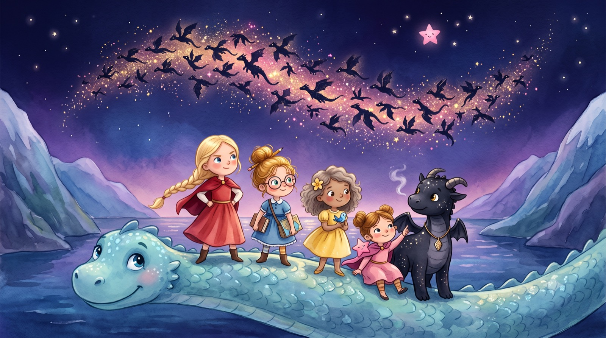
På hjemveien satt Flamme med bestemorens avskjedsgave rundt halsen: det gamle skjellet fra stranden, som viste seg å ha tilhørt moren hans. Og da natten kom og stjernene tentes, oppdaget Astrid noe: krystallene i lommene deres glødet sterkere enn noen gang før. Ikke helt som stjerner ennå. Men nesten.
«Rart,» sa hun. «Vi hjalp jo ingen denne gangen.»
«Jo,» sa Ela og lente seg inntil Flamme. «Vi hjalp noen med å finne hjem. Det teller kanskje aller mest.»
Og høyt der oppe blinket den lille rosa stjernen – men denne kvelden var det noe annerledes ved den. Den blinket ikke rolig og fornøyd som før. Den flakket. Nesten som et stearinlys i trekk.
Men det var det ingen som la merke til. Ikke ennå.
Snipp snapp snute, så var også dette eventyret ute! ✨🐉🌊
Kapittel 8 · 🌌
Det var Ela som oppdaget det først. Det var det som regel.
De satt på slottsmuren en kveld, slik de alltid gjorde, og ventet på at den rosa stjernen skulle blinke sitt vanlige god-natt-blink. Men den kvelden blinket den ikke.
Den bare sto der. Blek. Stille.
«Noe er galt,» sa Ela. «Den har blinket til oss hver eneste kveld i over ett år. Stjerner glemmer ikke sånt.»
«Kanskje den bare er trøtt?» prøvde Flamme. Men han hørte selv at det ikke stemte.
Og så, mens de så på, skjedde det noe som fikk det til å gå kaldt nedover ryggen på alle fem: en stjerne lengst i øst sluknet. Den blinket svakere og svakere – og så var den borte. Bare et lite, svart hull i himmelen der den hadde vært.
Så sluknet én til.
Og én til.
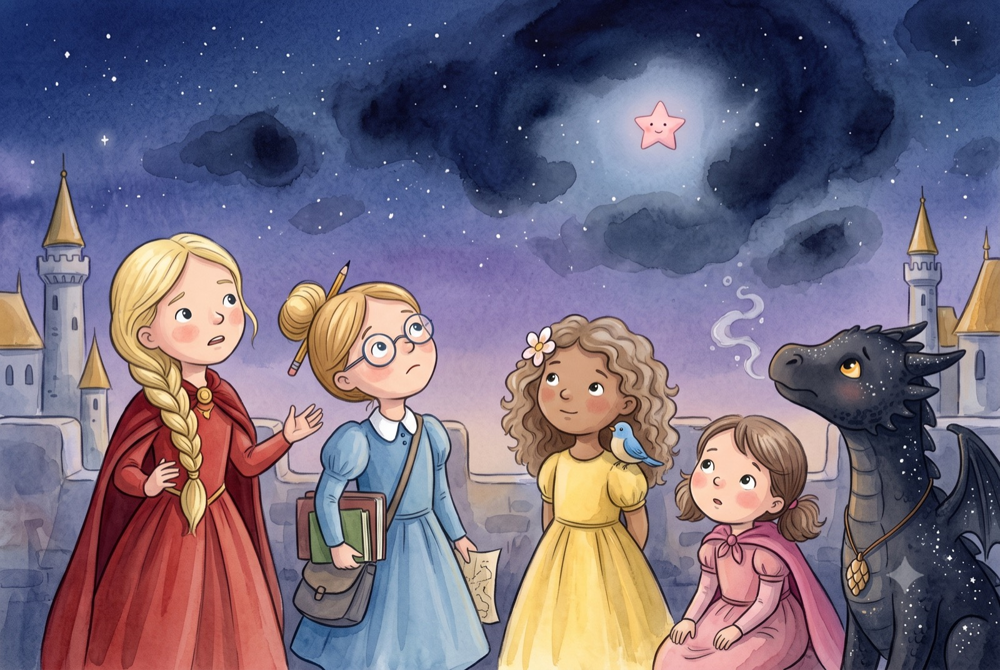
De løp til biblioteket, og Astrid rev til seg den gamle stjerneboken. Hun bladde og bladde, leste og myste, mens de andre holdt lys for henne. Og til slutt fant hun det, på en side nesten ingen hadde åpnet på hundre år:
«Vokt dere for Skyggetåken, ensomhetens ånde. Den fødes der triste tanker samles, og stiger mot himmelen når ingen trøster dem. Kommer den til Stjernelandet, sluker den lyset, stjerne for stjerne. For stjerner lever av glede – og Skyggetåken lar ingen glede slippe gjennom.»
«Skyggetåken…» hvisket Ellie. «Det høres ut som tåken rundt Bølges øy! Den som var laget av ensomhet og triste tanker!»
«Det ER den,» sa Astrid alvorlig. «Eller slektningen dens. Hør her: da vi hjalp Bølge, lettet tåken hans fordi han ble glad. Men all tåken i hele verden blir ikke borte av seg selv. Den stiger. Opp og opp. Og nå –» hun så mot vinduet, der enda en stjerne blafret svakt, «– nå har den nådd Stjernelandet.»
«Og den rosa stjernen vår er der oppe,» sa Hanna. Hun knyttet nevene. «Alene. I mørket.»
«Ikke lenge,» sa Ela.
I samme øyeblikk begynte det å lyse i lommene deres.
De tok frem krystallene – og denne gangen glødet de ikke svakt og forsiktig. De strålte. Rosa, blått, gyllent og sølvhvitt lys fylte hele biblioteket, så sterkt at de måtte myse. Fire krystaller som skinte akkurat som…
«…ekte stjerner,» hvisket Astrid. «Det var dette nissen mente. De ladet ikke bare av gode gjerninger. De ventet på at vi skulle være klare. Og på at noen der oppe skulle trenge oss.»
Nå forsto de alt. Ela sa det høyt, stille og klart, slik bare hun kunne:
«Det var derfor stjernefrøene falt ned for tusen år siden. Stjernene visste at denne natten ville komme. De sådde frøene her nede – og ventet på fire som var modige nok, kloke nok, snille nok og lure nok til å tenne dem. De ventet på oss.»
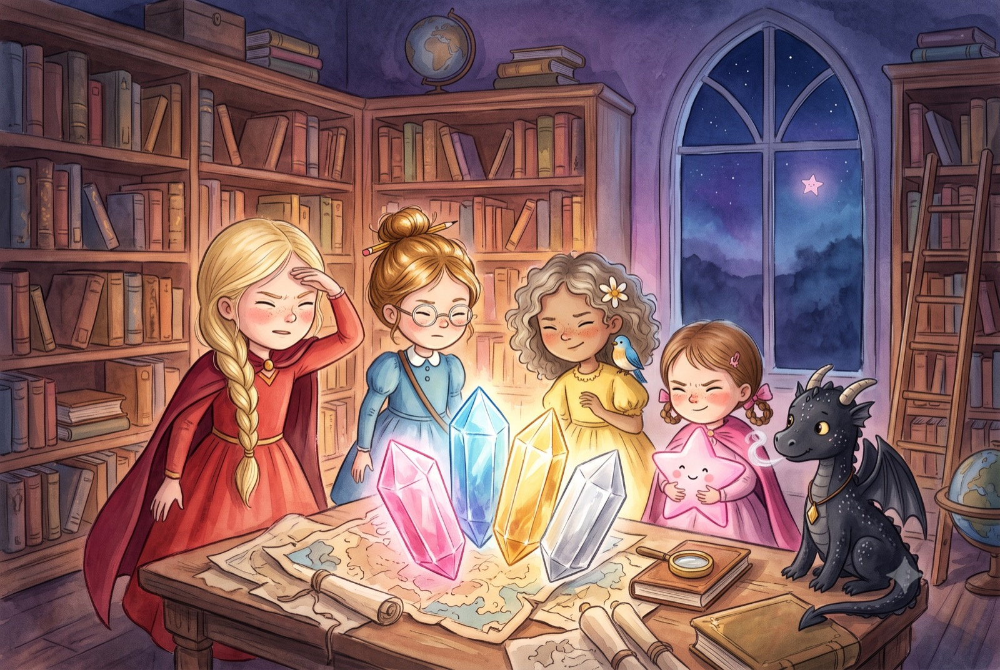
De løp opp på slottsmuren. Der oppe var himmelen enda mørkere nå – hele det østlige hjørnet var svart og tomt, og en gråsvart tåke krøp sakte over stjernehimmelen som søl over en tegning.
«Hva gjør vi?» spurte Flamme.
«Det boken sa,» svarte Astrid. «Når alle fire skinner som stjerner, åpner porten seg. Kom – vi legger dem sammen!»
De fire prinsessene stilte seg i ring, akkurat der de alltid satt om kveldene, og holdt krystallene mot hverandre. Rosa mot blått, gyllent mot sølvhvitt.
Først skjedde ingenting.
Så begynte lysene å flette seg sammen, som tråder i en fletning. Det sang svakt i luften, som når man drar fingeren rundt kanten på et glass. Og rett foran dem, midt på slottsmuren, vokste det frem en stor, glitrende bue av stjernelys – en port, med tusen små stjerner som virvlet rundt kanten, og på innsiden: himmel, dyp og mørkeblå, som gikk oppover.
Porten til Stjernelandet.
De sto helt stille og så på den. Gjennom porten kunne de høre noe, langt, langt borte. En bitteliten stemme, tynn som sølvtråd, som de kjente så altfor godt:
«Hjelp… er det noen som hører meg…?»
«Den rosa stjernen!» ropte Ela.
Hanna tok et skritt frem, modig som alltid – men så stoppet hun og snudde seg mot de andre. For selv den modigste vet at noen reiser skal man ikke gjøre alene.
«Sammen?» spurte hun.
Ellie tok hånden hennes. Astrid tok Ellies. Ela tok Astrids. Og Flamme bredte de svarte vingene sine over dem alle fire.
«Sammen,» sa de.
Og så gikk de gjennom porten.
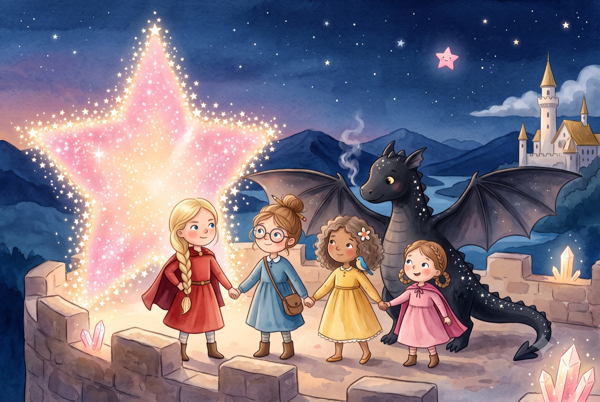
Snipp snapp… nei, vent! Dette eventyret er ikke ute ennå. Det fortsetter i neste kapittel – for på den andre siden av porten venter det største eventyret av dem alle. ✨🌌👑
Kapittel 9 · ⭐
Å gå gjennom porten var som å stupe inn i en varm sommernatt.
De fire prinsessene og Flamme sto plutselig på en sti av stjernestøv som glitret under føttene deres. Rundt dem, over dem, under dem var det himmel – dyp og mørkeblå – og overalt hang stjerner, store som lykter, hver og en med sitt eget lille hus av lys. Melkeveien rant forbi som en sølvelv, og langt borte danset nordlyset i grønne og lilla slør.
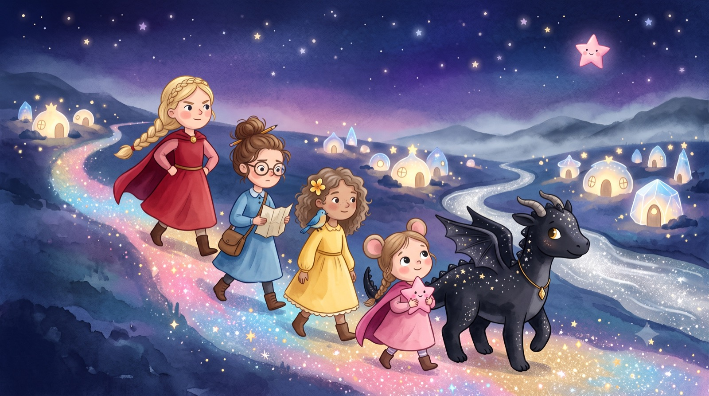
«Stjernelandet,» hvisket Astrid. «Det er akkurat som i boken. Bare tusen ganger vakrere.»
Men noe var galt. Mange av stjernehusene sto mørke og tomme. Og i det fjerne, der den rosa stjernen bodde, veltet en gråsvart tåke seg over himmelen som skitten røyk.
«Kom,» sa Hanna. «Stien går rett mot den. Vi følger den – uansett hva.»
Jo nærmere de kom, jo tettere ble Skyggetåken. Og det var da de oppdaget det farligste med den: Skyggetåken hvisket.
Den hvisket ikke høyt. Den hvisket inni dem.
Til Ellie hvisket den: «Ingen hører egentlig på deg… dyrene later bare som…» Og Ellie ble stille og hang med hodet.
Til Astrid hvisket den: «Du kan ikke nok… bøkene dine hjelper ingen her…» Og Astrid mistet tråden i sine egne tanker, hun som aldri gjorde det.
Til Flamme hvisket den: «Liten, liten, altfor liten…» Og Flammes vinger ble tunge som bly.
Og til Hanna, den modigste av alle, hvisket den lengst av alt: «Du er ikke modig. Du har bare aldri vært ordentlig redd før. Men nå er du det, ikke sant? Nå er du det…»
Og Hanna – Hanna som alltid gikk først – stoppet midt på stien. Hun satte seg ned i stjernestøvet, og de andre satte seg ved siden av henne, én etter én, tunge og grå og triste, mens tåken krøp tettere rundt dem.
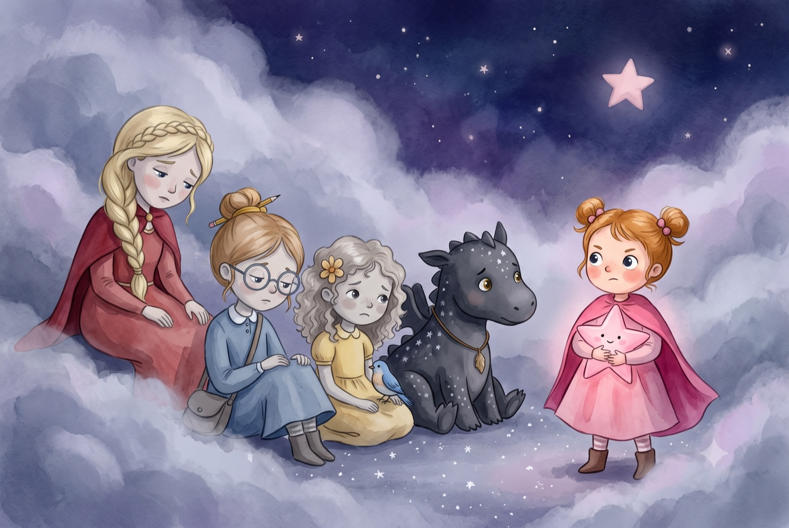
Men det var én tåken ikke helt fikk tak på. Den minste. For Ela var vant til at verden var stor og hun var liten – så når tåken hvisket «du er for liten», tenkte Ela bare: «Ja? Det har jeg alltid vært. Og likevel har det gått ganske bra.»
Og fordi hodet hennes fikk være i fred, kunne hun gjøre det hun gjorde best: tenke.
Hun så på vennene sine. Hun så på tåken. Og så husket hun noe. «Bølges øy!» ropte hun og spratt opp. «Hør på meg! Da vi fant Bølge, var øya hans dekket av akkurat sånn tåke – og vet dere hva som fikk den til å lette? Ikke sverd. Ikke ild. Bølge ble glad! Tåken er laget av triste tanker – så den tåler ikke glade! Den hvisker triste ting til oss fordi triste hjerter er det eneste den kan holde fast i!»
Hun tok Hannas hånd. «Hanna. Husker du da vi fløy til stjernene aller første gang, og du sa at å være modig betyr å tørre selv om man er redd?»
Hanna løftet hodet, sakte.
«Og Astrid – husker du da du fant Tordenfossen på kartet, og ingen andre skjønte gåten? Og Ellie, da uglen svarte deg i Hviskeskogen? Og Flamme…» Ela la begge hendene på dragenesen hans. «Husker du da du var den eneste i hele verden som var liten nok til å redde fjellnissen?»
Og for hvert minne hun nevnte, skjedde det noe. Tåken rundt dem vek. Bare litt. Men den vek.
«Det virker!» ropte Astrid, og nå var hodet hennes klart igjen. «Glade minner! Alle sammen – tenk på det beste dere vet!»
Og så begynte de å fortelle, i munnen på hverandre, mens de reiste seg og gikk videre inn i tåken: om sandslott med ekte tårn, om Nulle som hoppet så blomstene sprutet, om Frost sin kalde bamseklem, om bestemor Embra og hele natteflokken, om kveldsmat på slottsmuren, tusen kvelder på rad, alltid sammen.
Tåken freste og krympet rundt dem.
Og til slutt, da de gikk hånd i hånd gjennom det aller mørkeste – da sang de. Den gamle sangen, den aller første, den fra natten da alt begynte:
«Sammen er vi sterke, sammen tør vi alt,
sammen flyr vi høyere enn noen har fortalt!»
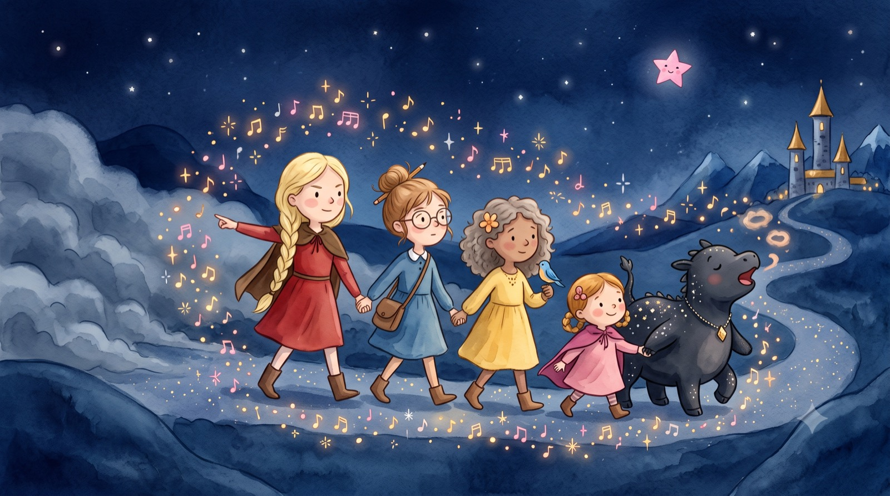
Sangen lyste. Det er den eneste måten å beskrive det på – tonene glødet i mørket som gnister, og tåken rygget unna for hver eneste strofe, og der – rett foran dem – lå den til slutt:
En liten stjerne. Blek og flakkende, som et stearinlys i trekk, alene i et hav av grått.
«Dere kom,» hvisket den rosa stjernen. «Dere hørte meg og kom…»
Ela løftet den varsomt opp og holdt den inntil kappen sin, akkurat som den aller første natten. «Selvfølgelig kom vi. Det er sånn venner virker.»
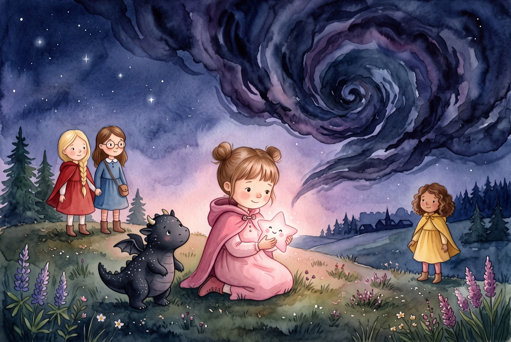
Men i det samme mørknet himmelen over dem. Skyggetåken hadde sluppet dem gjennom – men nå samlet den seg, all sammen, fra hele Stjernelandet, til én eneste svær, virvlende storm rett over hodene deres.
Den hadde ikke tenkt å gi seg.
Og fem venner, uansett hvor modige, kloke, lyttende, lure og varme de var – fem venner var ikke nok mot all verdens ensomhet på en gang.
«Hva gjør vi nå?» hvisket Flamme.
Det får du vite i neste kapittel. For nå skjer det noe hjemme i kongeriket – noe Skyggetåken aldri hadde regnet med.
Eventyret fortsetter… ✨🌌👑
Kapittel 10 · 🌠
Samtidig, hjemme i kongeriket, sto fjellnissen utenfor det lille huset sitt ved Tordenfossen og så opp på en himmel som ble svartere og svartere.
«Stjernene slukner,» mumlet han i skjegget. «Og porten på slottsmuren står åpen… Da er de der oppe. Alle fire, og den lille dragen.» Han knyttet de gamle nevene. «Og de kommer til å trenge hjelp. HVER ENESTE VENN DE HAR!»
Og så skjedde det noe Skyggetåken aldri hadde regnet med.
Nissen sendte bud med Ellies fugler, og fuglene fløy til alle verdenshjørner. Nulle hørte det og hoppet av gårde så blomstene sto som en stripe etter den. Bølge hørte det og la ut mot Tåkeøyene i full fart for å hente natteflokken. Og en havsule fløy helt nord til Isfjellene og ropte det ned til to hvite bjørner.
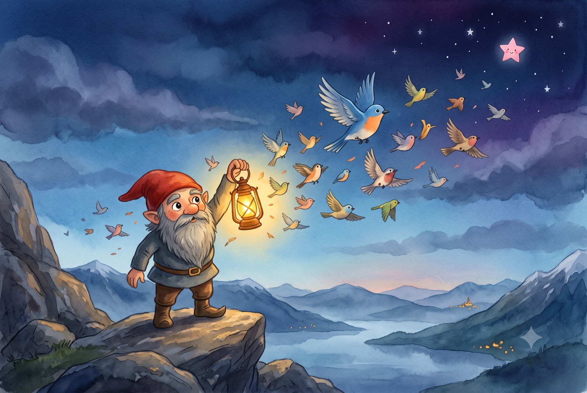
For godhet, ser dere, er som frø. Man sår og sår, og tenker kanskje ikke mer over det. Men en dag – akkurat den dagen man trenger det som mest – står det en hel hage der.
Oppe i Stjernelandet sto de fem vennene tett i tett, med den rosa stjernen i Elas hender, mens Skyggetåke-stormen virvlet seg større og større over dem. De sang så høyt de kunne, de ropte sine gladeste minner ut i mørket – men stormen var for stor. Fem stemmer, uansett hvor varme, druknet i all verdens samlede ensomhet.
«Vi klarer det ikke alene!» ropte Astrid gjennom uværet.
Og da – akkurat da – lyste porten opp bak dem som en soloppgang.
Først kom Nulle, i ett eneste digert hopp, og der den lille vårkaninen landet på stjernestøvstien, sprang det opp blomster – stjerneblomster – midt i mørket. Så kom fjellnissen stabbende med lykten sin høyt hevet. Så Frost og den store isbjørnmammaen, side om side. Og så – med et sus av hundre svarte vinger – hele natteflokken fra den glemte dalen, med bestemor Embra i spissen, og på himmelelven under dem kom Bølge svømmende gjennom Melkeveien som om den var laget bare for ham, for i Stjernelandet kan sjøormer svømme i himmelen.
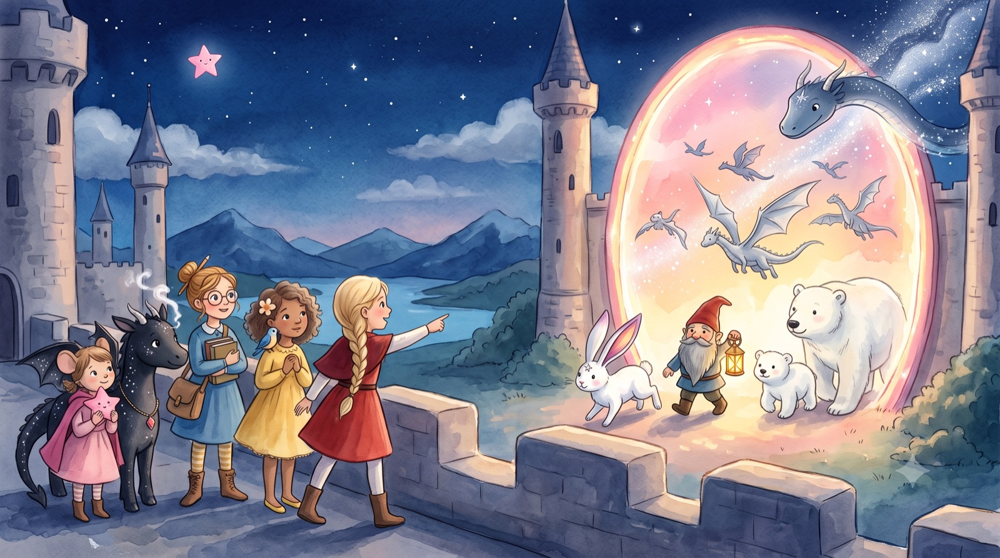
«DERE KOM!» ropte Flamme. «ALLE SAMMEN!»
«Selvfølgelig,» sa Bølge og la den enorme snuten sin helt inntil dem. «Dere lærte oss jo hvordan man gjør. Man kommer når en venn trenger en.»
Skyggetåken raste og vokste. Men nå raste den mot en hel hær av glede: dragene fløy i formasjon og tegnet lysende mønstre, Nulle hoppet stjerneblomster i lange rekker, Frost og mamma lo sine rumlende bjørnelatter, og alle – alle – sang.
Tåken krympet. Men den ble ikke borte. Den trakk seg sammen til en tett, mørk klump som skalv midt på himmelen, og hvor mye de enn sang, ville ikke den siste klumpen slippe.
Og da var det Ela – selvfølgelig Ela – som la hodet på skrå og lyttet. Og hun hørte noe ingen andre hørte, fordi ingen andre tenkte på å høre etter.
Skyggetåken gråt.
«Stopp!» ropte hun, og alle ble stille. «Hør… Tåken er jo laget av triste tanker og ensomhet. Det betyr…» Hun tok et skritt mot den mørke klumpen, liten som hun var. «Det betyr at tåken selv er det ensomste som finnes i hele verden. Ingen har noen gang trøstet den. Alle har bare jaget den bort.»
Hun strakte hendene frem, med den rosa stjernen lysende i dem.
«Hei du,» sa hun mykt, akkurat som til en fallen stjerne en gang for lenge siden. «Vi skal ikke skade deg. Du trenger ikke være alene lenger. Kom.»
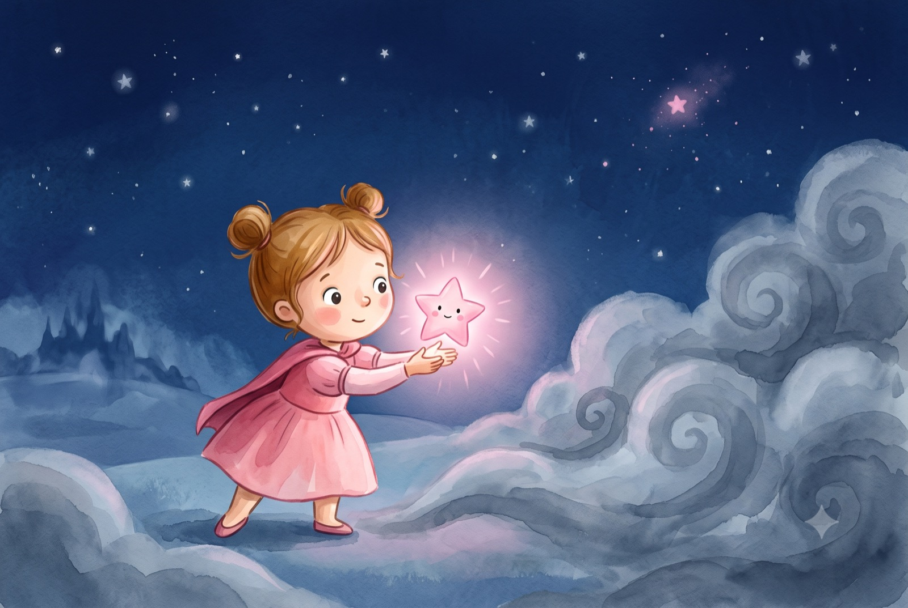
Og den store, mørke klumpen skalv én siste gang – og så slapp den. All ensomheten som var samlet i den gjennom tusen år, slapp taket og løste seg opp – ikke i ingenting, men i et regn av bittesmå, glitrende gnister som steg og steg og festet seg på himmelen.
Nye stjerner. Tusenvis av nye, små stjerner, der de mørke hullene hadde vært.
For det er det som skjer med triste tanker når de endelig blir trøstet: de blir til lys.
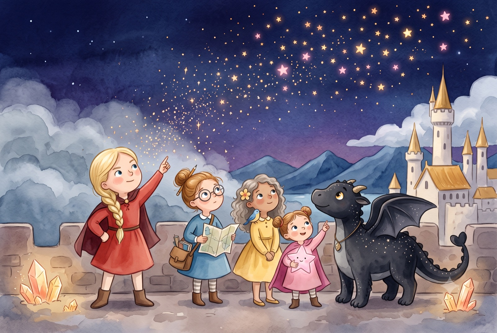
Og så ble det fest i Stjernelandet – en fest som stjernene snakker om den dag i dag. Den rosa stjernen strålte sterkere enn noen gang og danset med alle. Bølge svømte loop i Melkeveien med prinsessene på ryggen, dragene og fuglene fløy kappflyging rundt månen, Nulle dekket en hel stjernesti med blomster, og fjellnissen danset med isbjørnmamma til Frost lo så han trillet rundt.
Da festen var over, tok den rosa stjernen dem med til det høyeste punktet i Stjernelandet. «Dere reddet ikke bare meg,» sa den. «Dere reddet hele himmelen. Og sånt skal huskes for alltid. Se!»
Og der, på den fineste plassen på hele nattehimmelen, tentes nye stjerner, en etter en: en blågrønn for Bølge. En hoppende hvit for Nulle. En gyllen for nissen. To isblanke, side om side, for Frost og mamma. En hel liten stripe av natteskjær for drageflokken. Og aller øverst: fem stjerner i ring – fire prinsessestjerner rundt en liten dragestjerne – som holdt sammen, slik de alltid hadde gjort.
Porten satte dem varsomt ned på slottsmuren igjen, akkurat der alt hadde begynt. Det var nesten morgen. Krystallene deres var stille og mørke nå – de hadde gjort jobben sin, hvisket Astrid, og sovnet som frø gjør når blomsten endelig har blomstret.
De fire prinsessene og Flamme ble sittende tett i tett og se på himmelen, som var fullere av stjerner enn noen gang i verdens historie.
«Vet dere hva jeg har lært av alt sammen?» sa Flamme til slutt og blåste en søvnig røykring. «Helt fra den første natten?»
«At man klarer mer sammen enn alene?» sa Hanna.
«At svaret ofte står i en bok?» sa Astrid.
«At alle trenger noen som lytter?» sa Ellie.
«Jo,» sa Flamme. «Men mest av alt dette: all godhet man gir bort, kommer tilbake. Kanskje ikke med en gang. Men en natt står det en hel hage av venner der – akkurat når man trenger dem som mest.»
«Det,» sa Ela søvnig og la kinnet mot den myke dragenesen hans, «kunne jeg ikke sagt lurere selv.»
Og så satt de der, alle fem, mens solen sto opp over slottet langt, langt borte, bak sju blå fjell og sju glitrende innsjøer.
Så neste gang du ser opp på nattehimmelen: let etter en liten stjerne som blinker rosa. Og like ved den – fem stjerner i ring, som holder sammen.
Da vet du at det er dem. Hanna, Ellie, Astrid, Ela og Flamme.
Og hvis du vinker – så blinker de tilbake. For det er sånn venner virker.
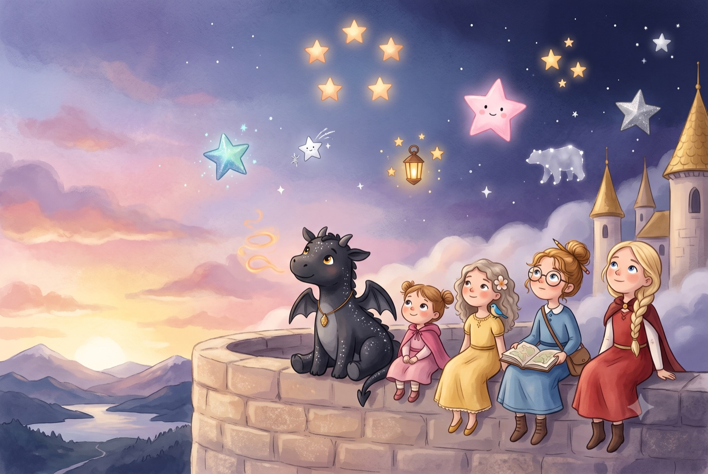
Snipp snapp snute – så var HELE det store eventyret ute! ✨🐉👑🌟
God natt, og sov godt ✨
Hvis du vinker til den rosa stjernen – så blinker den tilbake.
Les boken igjen